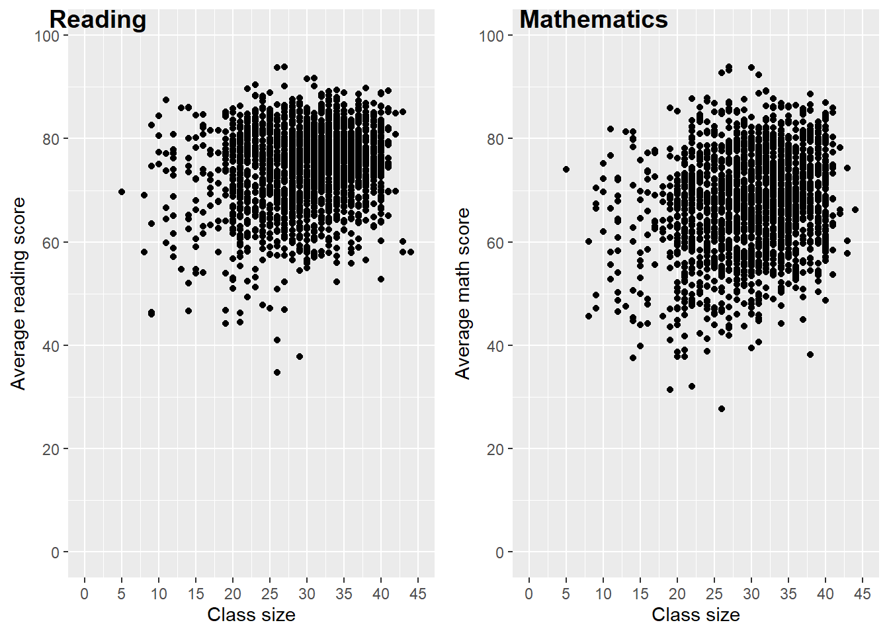

library(haven)
link <- "https://raw.githack.com/chung-jiwoong/FMB819-Slides/refs/heads/main/chapter_slr/data/grade5.dta"
grades <- read_dta(link)Simple Linear Regression
Task 1: Getting to know the data
- 데이터를 여기에서 다운로드해서
grades로 저장하시오.
힌트:haven라이브러리의read_dta함수 사용해서.dta형식의 파일 불러오면 됨. (참고: .dta는 Stata에서 사용하는 데이터 파일 확장자임.)
데이터셋 설명:
- 관측 단위는? 즉, 각 행이 무엇을 의미하는가?
- 총 몇 개의 관측치가 있는가?
- 데이터셋을 확인하고 어떤 변수가 있는지 확인하시오.
avgmath와avgverb는 뭘 의미하는가?
skimr패키지의skim함수 사용해서classize,avgmath,avgverb변수에 대한 기본적인 요약 통계 확인함.
힌트:dplyr의select사용해서 변수 선택한 후%>%로skim()적용하면 됨.
- 관측 단위는? 즉, 각 행이 무엇을 의미하는가?
nrow(grades)## [1] 2019names(grades)## [1] "schlcode" "school_enrollment" "grade"
## [4] "classize" "avgmath" "avgverb"
## [7] "disadvantaged" "female" "religious"avgmath: 학급의 평균 수학 점수 avgverb: 학급의 평균 언어 점수
if (!require("skimr")) install.packages("skimr")
library(skimr)
library(tidyverse)
grades %>%
select(classize, avgmath, avgverb) %>%
skim()| Name | Piped data |
| Number of rows | 2019 |
| Number of columns | 3 |
| _______________________ | |
| Column type frequency: | |
| numeric | 3 |
| ________________________ | |
| Group variables | None |
Variable type: numeric
| skim_variable | n_missing | complete_rate | mean | sd | p0 | p25 | p50 | p75 | p100 | hist |
|---|---|---|---|---|---|---|---|---|---|---|
| classize | 0 | 1 | 29.93 | 6.56 | 5.00 | 26.00 | 31.00 | 35.00 | 44.00 | ▁▁▆▇▃ |
| avgmath | 0 | 1 | 67.30 | 9.60 | 27.69 | 61.12 | 67.82 | 74.08 | 93.93 | ▁▂▇▇▁ |
| avgverb | 0 | 1 | 74.38 | 7.68 | 34.80 | 69.83 | 75.38 | 79.84 | 93.86 | ▁▁▃▇▂ |
skim 함수는 변수에 대한 몇 가지 유용한 통계를 제공합니다. 반 크기와 평균 점수 변수에는 결측값이 없습니다. 반 크기는 최소 5명에서 최대 44명까지 분포하며, 평균적으로 약 30명입니다. 작은 반의 수는 비교적 적으며, 25번째 백분위수(1사분위수)는 26명입니다. 또한 평균 수학 점수가 평균 언어 점수보다 약간 낮았으며, 수학 점수의 분포가 언어 점수보다 더 넓게 퍼져 있음을 알 수 있습니다.
- 학급 규모와 학생 성취도 간 실제 (선형) 관계에 대해 어떤 관계가 있을 것이라 생각하는가?
한편으로는, 작은 반에서는 개별화된 학습이 더 용이할 수 있으며, 교사들이 성취도가 낮은 학생들을 더 쉽게 모니터링할 수 있습니다. 그러나 교사들이 작은 반의 장점을 충분히 활용할 수 있도록 훈련되지 않았다면, 작은 반이 반드시 유익하지 않을 수도 있습니다.
또한, 국가에 따라 작은 반이 경제적으로 열악한 지역에서 더 흔할 수 있으며, 이 경우 반 크기와 학생 성취도 사이에 양의 관계가 나타날 수 있습니다. 반대로, 보다 신중한 부모들은 작은 반이 자녀에게 더 유리할 것이라고 생각하여 반 크기가 작은 지역으로 이사할 가능성이 높으며, 이 경우 반 크기와 학생 성취도 사이에 음의 관계가 나타날 가능성이 큽니다.
산점도를 사용하면 반 크기와 학생 성취도 간의 관계를 처음으로 탐색하는 데 도움이 될 것입니다.
# cowplot 패키지 로드 (ggplot2 그래프를 결합하기 위해 사용)
library(cowplot)
# 첫 번째 산점도: 반 크기(classize)와 평균 언어 점수(avgverb)의 관계
scatter_verb <- grades %>%
ggplot() + # ggplot 객체 생성
aes(x = classize, y = avgverb) + # x축: 반 크기, y축: 평균 언어 점수
geom_point() + # 산점도 추가
scale_x_continuous(limits = c(0, 45), breaks = seq(0, 45, 5)) + # x축 범위를 0~45로 설정하고 5 단위로 눈금 추가
scale_y_continuous(limits = c(0, 100), breaks = seq(0, 100, 20)) + # y축 범위를 0~100으로 설정하고 20 단위로 눈금 추가
labs(x = "Class size", # x축 라벨 설정
y = "Average reading score") # y축 라벨 설정
# 두 번째 산점도: 반 크기(classize)와 평균 수학 점수(avgmath)의 관계
scatter_math <- grades %>%
ggplot() + # ggplot 객체 생성
aes(x = classize, y = avgmath) + # x축: 반 크기, y축: 평균 수학 점수
geom_point() + # 산점도 추가
scale_x_continuous(limits = c(0, 45), breaks = seq(0, 45, 5)) + # x축 범위를 0~45로 설정하고 5 단위로 눈금 추가
scale_y_continuous(limits = c(0, 100), breaks = seq(0, 100, 20)) + # y축 범위를 0~100으로 설정하고 20 단위로 눈금 추가
labs(x = "Class size", # x축 라벨 설정
y = "Average math score") # y축 라벨 설정
# cowplot의 plot_grid()를 사용하여 두 개의 산점도를 하나의 플롯으로 결합
plot_grid(scatter_verb, scatter_math, labels = c("Reading", "Mathematics"))
# labels 옵션을 사용하여 각각의 플롯에 "Reading"과 "Mathematics"라는 레이블 추가- 학급 규모와 수학/언어 점수 간 상관관계는?
grades %>%
summarise(cor_verb = cor(classize, avgverb),
cor_math = cor(classize, avgmath))## # A tibble: 1 × 2
## cor_verb cor_math
## <dbl> <dbl>
## 1 0.190 0.217두 상관계수는 양수이며, 이는 이전 산점도에서 관찰된 양의 상관관계와 일치합니다. 그러나 상관계수는 약 0.2로 상당히 낮아, 관계가 그리 강하지 않음을 시사합니다.
상관계수가 1이면 완전한 양의 선형 관계를 의미하며, 즉 모든 점이 동일한 직선 위에 놓이게 됩니다. 반대로, 상관계수가 -1이면 완전한 음의 선형 관계를 의미합니다. 상관계수가 0이면 선형적인 관계가 전혀 없음을 뜻합니다.
Task 2: OLS Regression
다음 코드를 실행하여 데이터를 학급 규모(class size) 수준에서 집계하시오:
grades_avg_cs <- grades %>%
group_by(classize) %>%
summarise(avgmath_cs = mean(avgmath),
avgverb_cs = mean(avgverb))- 평균 언어 점수(
avgverb_cs)를 학급 규모(classize)에 대해 회귀분석 수행. 회귀 계수(coefficients)를 해석하시오.
lm(avgverb_cs ~ classize, grades_avg_cs)##
## Call:
## lm(formula = avgverb_cs ~ classize, data = grades_avg_cs)
##
## Coefficients:
## (Intercept) classize
## 69.1861 0.1332\(b_0\) (절편)의 해석: 반 크기가 0명일 때 예측된 평균 언어 점수는 69.19입니다. 하지만 이는 현실적으로 의미가 없습니다. 왜냐하면 반에 학생이 한 명도 없다면 점수도 존재할 수 없기 때문입니다. 따라서 표본 외 예측 (out-of-sample predictions), 즉 데이터 범위를 벗어난 값에 대한 예측에는 주의해야 합니다.
\(b_1\) (기울기)의 해석: 평균적으로, 반 크기가 학생 1명 증가할 때 평균 언어 점수가 0.13만큼 증가하는 것으로 나타났습니다.
- 이 회귀분석에서 OLS 계수 \(b_0\) 및 \(b_1\)을 직접 계산 (공식 이용).
힌트:cov,var,mean함수 사용.
cov_x_y = grades_avg_cs %>%
summarise(cov(classize, avgmath_cs))
var_x = var(grades_avg_cs$classize)
b_1 = cov_x_y / var_x
b_1## cov(classize, avgmath_cs)
## 1 0.191271y_bar = mean(grades_avg_cs$avgmath_cs)
x_bar = mean(grades_avg_cs$classize)
b_0 = y_bar - b_1 * x_bar
b_0## cov(classize, avgmath_cs)
## 1 61.10917